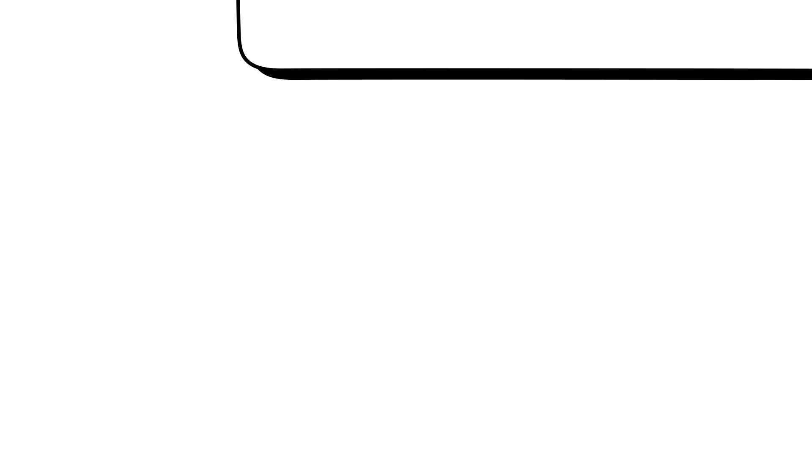
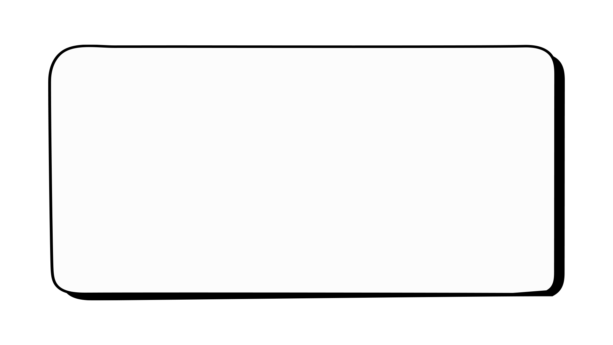
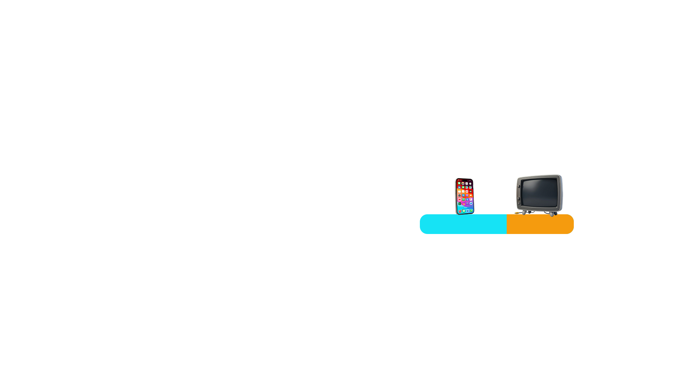
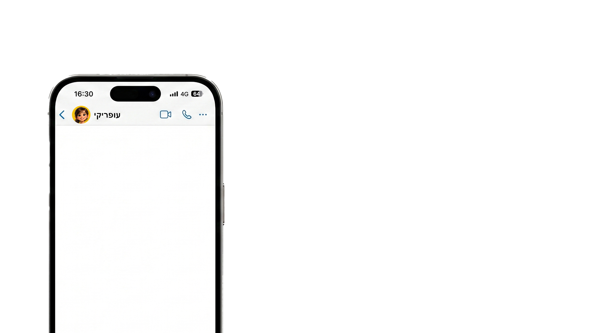

נועה לומדת בכיתה ח׳ בבית הספר.
בכל יום חול, אחרי שהיא חוזרת הביתה, יש לה בערך 5 שעות פנויות (שהן 300 דקות),
והיא מנצלת אותן בעיקר לפעילות אחת ספציפית…

רגע לפני שהיא סגרה את הטלפון, היא נתקלה בסרטון חדש של אלכס, יוצרת התוכן האהובה עליה.
אלכס היא תלמידת תיכון שמשתפת סרטונים מהחיים שלה.
לחצו על הסרטון כדי לצפות בו.


1. א. נועה מחליטה לבנות לעצמה יישומון פשוט לניהול הזמן.
פתחו את היישומון ועזרו לנועה לחשב את הזמנים שלה במצבים שונים.
התחילו בבדיקה של ימים שבהם יש לה פחות זמן פנוי,
ונסו לפחות שני מצבים:
כאשר יש לה 200 דקות וכאשר יש לה 260 דקות זמן פנוי.
בדקו איך זה משפיע על התכנון שלה.
1. ב. ברוב הימים, לנועה יש 300 דקות פנויות ביום, והיא רוצה לנצל אותן היטב. כדי לדייק בזמנים, היא מכוונת לה טיימרים.
הקלידו את מספר הדקות המתאים בכל טיימר:


2. כמה דקות נמשך כל פרק בסדרה?
הקלידו את מספר הדקות המתאים בטיימר:
מתוך זמן המסך שיש לה, נועה רוצה להקדיש חלק לצפייה
בסדרה האהובה עליה, ואת השאר לגלישה חופשית באינטרנט.
כל פרק בסדרה אורך כ-40% מזמן המסך שלה.
105 דקות של זמן מסך:

40% השאר
נועה התלהבה מהשיטה!
למרות שזה קצת חורג מזמן המסך שלה היום (לא נורא נועה, קורה לטובים ביותר!),
היא הייתה חייבת לשתף את חברה שלה, עופרי.
